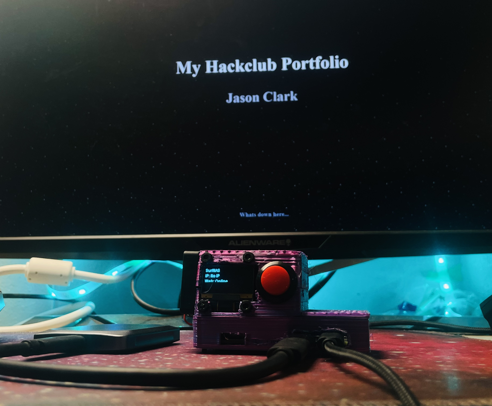
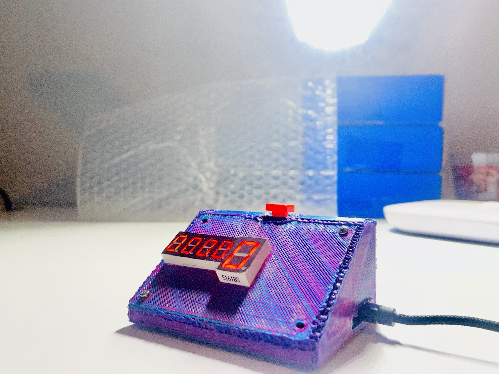
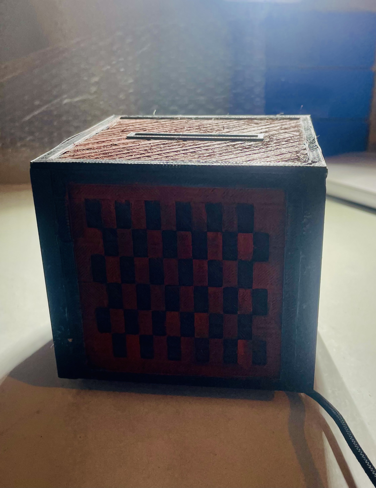
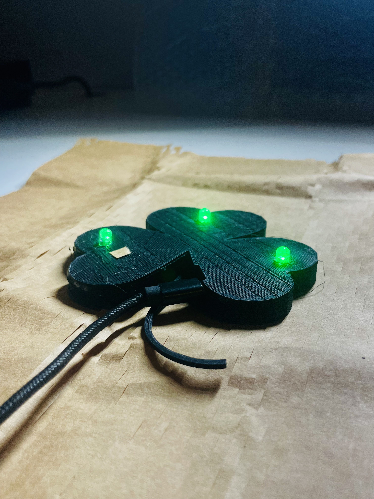
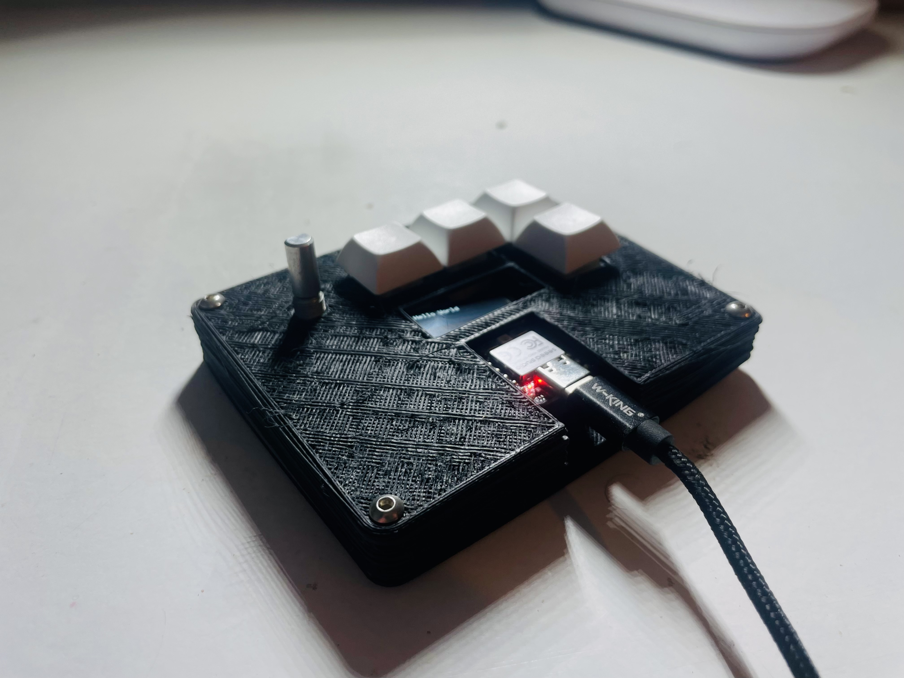
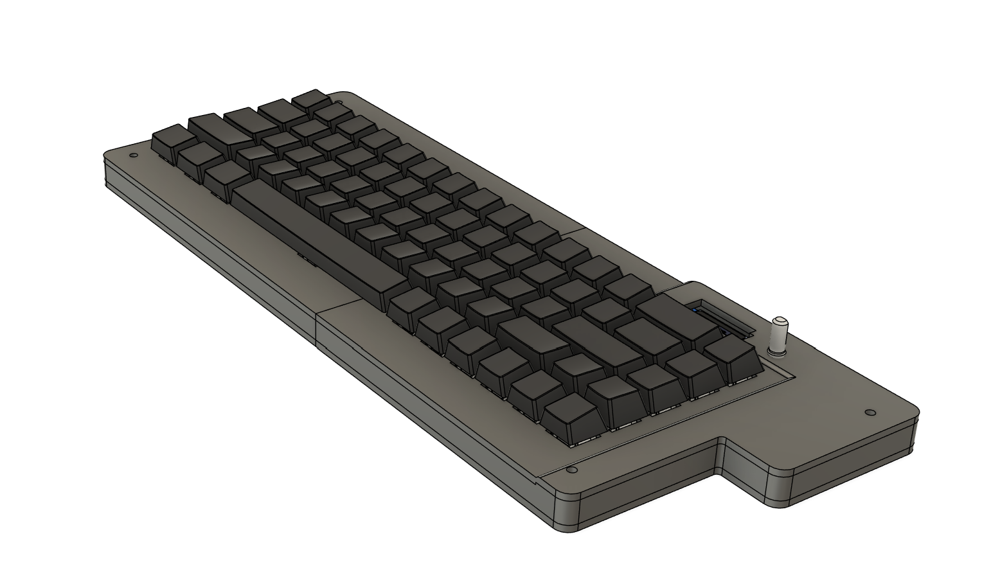
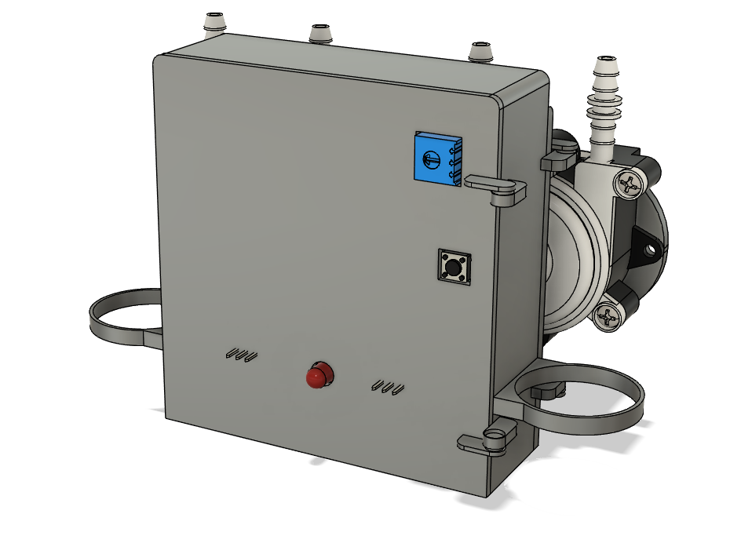

Hardware Projects

SurfNAS
Home Server built from scratch using a RPI and a fully custom 3D Printed case

Desktop Stopwatch
Small desktop stopwatch with: 4-digit 7-segment display ESP32-C3 button: Start / Pause Hold 2 Seconds - Reset

Jukebox
Minecraft style jukebox, uses a RFID reader and card(the disk). Then plays music through a DFPlayer. This is powered by a esp32-c3 supermini

Soldering Fume Extractor
A compact soldering fume extractor designed to improve air quality while soldering, featuring a custom 3D printed enclosure.

Solas Sense Shamrock
A LED Lamp shaped like a shamrock that changes led color based off the room brightness.

Jason's MacroPad
A custom programmable macropad designed for productivity shortcuts with a fully custom enclosure and firmware.

The Clanker
A fully custom 65% mechanical keyboard project combining hardware design, firmware development, and a 3D printed enclosure.

Water Dispenser
An automatic desktop water dispenser controlled by an ESP32-C3 with custom firmware and a fully 3D printed housing.